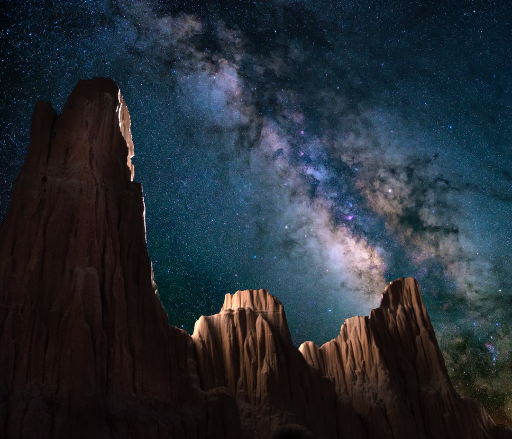

A Brand New Sky
Mars One aims to establish a permanent human settlement on Mars. Mars is the only planet we know of that can currently feasibly support human life and will be humankind’s first step to become a multiplanetary species. Mars One’s crews will go to Mars not to simply visit, but to live, explore, and create a second home for humanity. The first men and women to go to Mars are going there to stay.